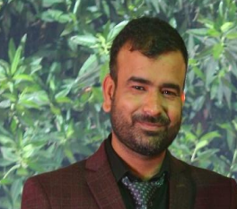

- Survival Analysis
- Bio-Statistics
- Vital Statistics
- Applied Statistics
- Statistical Methods

Dr. Anurag Sharma
Assistant Professor | Department of Statistics

Contact Details
-
Address
- 1/10204 A, Street No. 1, West Gorakh Park, Shahdara, Delhi - 110032
-
Phone (Office)
- 011-24112557
-
Mobile
- 8285468733
-
Email
- anurag.stats@rla.du.ac.in
Education & Career Profile
- Ph.D. in Statistics Department of Statistics, University of Delhi 2021
- M.Phil. in Statistics Department of Statistics, University of Delhi 2017
- M.Sc. Statistics Ramjas College, University of Delhi 2015
- B.Sc. (Hons.) Statistics Ramjas College, University of Delhi 2013
- Assistant Professor (Permanent) Department of Statistics, Ram Lal Anand College, University of Delhi 22 Nov 2021 – Till Date
- Bio-Statistician Rajiv Gandhi Cancer Institute and Research Centre, Delhi 19 Feb 2019 – 14 Aug 2021 (2.5 Years)
Educational Qualifications
Teaching Experience
Industry Experience
Administrative Assignments
- Member of Function Committee – 2022
- Member of Discipline Committee – 2022
- Member of Time Table Committee – 2023
- Member of Green Campus Committee – 2023
- Member of IT Infrastructure Committee – 2023
- Co-Convener of Time Table Committee – 2024
- Member of IT Infrastructure Committee – 2024
- Co-Convener of Time Table Committee – 2025
- Member of IT Infrastructure Committee – 2025
- Programme Officer of NSS unit from 2023–2026
Areas of Interest / Specialisation
Subjects Taught
- Calculus
- Descriptive Statistics
- Algebra
- Introduction to Probability
- Operational Research
- Statistics with R
- Probability & Probability Distribution
Publications Profile
- Grover G, Sharma A. Examining the Effect of Reduction of Predictors Affecting the Survival Time of HIV/AIDS Patients using a Multiple Correlation/Association Technique. J Commun Dis 2018; 50(3): 15-21. https://orcid.org/0000-0002-3482-0774
- Ravi V, Grover G, Das Rabindra Nath, Varshney M.K, Sharma A. A Correlation Technique to Reduce the Number of Predictors to Estimate the Survival Time of HIV/AIDS Patients on ART. International Journal of Statistics in Medical Research, 2018, 7, 129-136. https://doi.org/10.6000/1929-6029.2018.07.04.3
- Grover G, Sharma A. Estimating the Survival Time of HIV/AIDS Patients By Reducing The Number Of Patients Using Canonical Correlation Technique. Int J Biol Med Res. 2019; 10(2): 6714-6719.
- Mehta A, Verma A, Gupta G, Tripathi R, & Sharma A. Double Hit and Double Expresser Diffuse Large B Cell Lymphoma Subtypes: Discrete Subtypes and Major Predictors of Overall Survival. Indian Journal of Hematology and Blood Transfusion, 1-8. https://doi.org/10.1007/s12288-019-01248-w
- Sharma A, Ravi V, Sehgal VK, Grover G. Comparing the Performance of Different High Dimensional Variable Selection Techniques on the Low Dimensional HIV/AIDS Data set. J Commun Dis 2020; 52(1): 14-21.
- Gurprit G, Sharma A. Estimation of Survival Time of HIV/AIDS Patients While Reducing the Number of Predictors Using a Partial Correlation/Association Technique. Biomed Pharmacol J 2020; 13(2): 677-686. http://dx.doi.org/10.13005/bpj/1932
- Sharma A, Ahmed R, Agrawal N, Kapoor J, Sharma A, Khushoo V, & Mirgh S.P. (2020). Primary Bone Lymphoma: A 13 Year Retrospective Institutional Analysis in the Chemo-Immunotherapy Era. Indian Journal of Hematology and Blood Transfusion, 1-9.
- Gupta M, Karthikeyan G, Choudhury P.S., Sharma A, & Rawal S. (2020). Clinical outcome of Lu-177 PSMA in metastatic castration-resistant prostate cancer: An initial experience from a tertiary care cancer hospital. Annals of Cancer Research and Therapy, 28(2), 156-163.
- Gupta M, Karthikeyan G, Choudhury P.S., Sharma A, Singh A, & Rawal S. (2020). Is 177 Lu-PSMA an effective treatment modality for mCRPC patients with bone and visceral metastasis? Hellenic Journal of Nuclear Medicine, 23(3), 312-320.
- Ajit Chaturvedi, Komal and Anurag Sharma (2020). Shrinkage Estimators of the Reliability Characteristics of Moore and Bilikam Family of Lifetime Distribution based on Records. International Journal of Agricultural and Statistical Sciences.
- Mehta A, Vasudevan S, Parkash A, Sharma A, Vashist T, & Krishna V. (2021). COVID-19 mortality in cancer patients: a report from a tertiary cancer centre in India. PeerJ, 9, e10599.
- Malhotra P, Kapoor G, Jain S, Jain S, & Sharma A. (2021). Obesity and Sarcopenia in Survivors of Childhood Acute Lymphoblastic Leukemia. Indian Pediatrics, 58(5), 436-440.
- Mehta A, & Sharma A. (2021). Basics of survival statistics for oncologists. Journal of Current Oncology, 4(1), 13-13.
- Gupta M, Choudhury P.S., Jain P, Sharma M, Koyyala V.P.B., Goyal S, & Batra U. (2022). Molecular response assessment with immune adaptive positron emission tomography response criteria in solid tumors in lung cancer patients treated with nivolumab: Is it better than immune response evaluation criteria in solid tumors? Cancer/Radiothérapie.
- Agarwal A, Kapoor G, Jain S, Malhotra P, & Sharma A. (2022). Metabolic syndrome in childhood cancer survivors: delta BMI a risk factor in lower-middle-income countries. Supportive Care in Cancer, 1-9.
- Rathee K, Shukla A.K., Sharma A. (2022). On Estimation of parameters and Reliability characteristics for the Topp-Leone Distribution using Record Value. Journal of Applied Probability and Statistics 2021, Vol. 16, No. 3, pp. 43-62.
- Kumar L, Bhushan M, Kishore V, Chowdhary R.L., Barik S, Sharma A, & Gairola M. Dosimetric influence of acuros XB dose-to-medium and dose-to-water reporting modes on carcinoma cervix using intensity-modulated radiation therapy and volumetric rapidarc technique.
- Vasudevan S, Mehta A, Sharma S.K., & Sharma A. (2022). Expression of glucose transporter 1 (SLC2A1) – Clinicopathological associations and survival in an Indian cohort of colorectal cancer patients.
- Narayan S, Talwar V, Goel V, Chaudhary K, Sharma A, Redhu P, & Jain A. (2022). Co-relation of SARS-CoV-2 related 30-d mortality with HRCT score and RT-PCR Ct value-based viral load in patients with solid malignancy. World Journal of Clinical Oncology, 13(5), 339-351.
- Chowdhary R.L., Chufal K.S., Pahuja A.K., Ahmad I, Sharma M, Jwala M, & Sharma A. (2022). An institutional review of treatment outcomes in extraosseous Ewing's sarcoma — the largest Asian experience. Cancer/Radiothérapie.
- Sharma A, & Komal K. (2022). An Analysis of the Survival of Gall Bladder Patients in a Tertiary Cancer Center in India using Accelerated Failure Time Models. International Journal of Statistics in Medical Research, 11, 136-140.
- Sharma A. (2022). Survival Rate Estimation of Cervix Cancer Patients Using KM and WKM. Biomedical and Pharmacology Journal, 15(4), 1867-1872.
- Kathpalia M, Sharma A, Kaur N. Sacituzumab Govitecan as a Second-Line Treatment in Relapsed/Refractory Metastatic Triple-Negative Breast Cancer Patients: A Systematic Review and Meta-analysis. Annals of Pharmacotherapy. 2023; 0(0). doi:10.1177/10600280231164110.
- Kulkarni A.C., Sharma A. Role of lung ultrasonography for diagnosing atelectasis in robotic pelvic surgeries. Indian J Clin Anaesth 2023; 10(3): 269-275.
- Sharma A. & Kumar D. Reduction of Number of Predictors Using Correlation Technique For Estimation of Survival Time: An Application on Acute Lymphoblastic Leukemia Patients. Demography; 52(2): 85-96.
- Examining the Stress and Stressors among Undergraduate Students: A Cross-Sectional Study in University of Delhi. Annals of Biology 40(2): 263-268, 2024.
Association With Professional Bodies
- Lifetime Member of The Society of Statistics, Computer and Applications (SSCA)
Other Activities / Faculty Development Programmes
- Successfully completed Online One-Week Faculty Development Programme on "NEP-2020, New Trends in Higher Education" from 29 August – 04 September 2022. Grade: A+.
- Successfully completed One-Week Online National Faculty Development Program "Statistics with 'R', Financial Database and Analysis Software" jointly organized by University of Delhi and Guru Angad Dev Teaching Learning Centre, SGTB Khalsa College, University of Delhi. Grade: A+.
- Successfully conducted Online One-Week Faculty Development Programme on "Data Analysis Using R" jointly with Teaching Learning Center, Ramanujan College from 12–18 December 2022.
- Successfully completed 4-Week Faculty Induction/Orientation Programme for "Faculty in Universities/Colleges/Institutes of Higher Education" from 23 April – 22 May 2023. Grade: A+.
- Successfully completed Online Two-Week Refresher Course in "Statistics" from 30 March – 13 April 2023. Grade: A+.
- Successfully completed the NEP 2020 Orientation & Sensitization Programme under Malaviya Mission Teacher Training Programme (MM-TTP), UGC, organized by Centre for Professional Development in Higher Education (UGCMMTTC), University of Delhi from 19 December 2023 to 29 December 2023.
- Successfully conducted an Online One-Week Faculty Development Programme on "Research Writing & Mathematical Typesetting with LaTeX" under the aegis of PMMMNMTT, Ministry of Education, from 07 December – 13 December 2023.